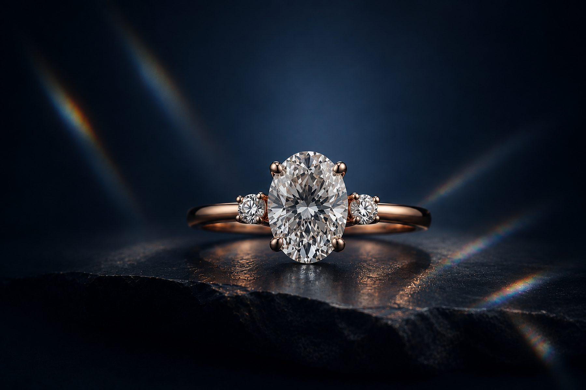

On cut, craft, and the small decisions behind every SolaraRoyale piece.

Cut shapes more than sparkle — it shapes how a stone feels on the hand, and how it ages with you over decades.
The four Cs matter less than the one most people skip: the setting.
From CAD file to first polish — what actually happens before a stone is ever set.
Journal entries above are placeholder editorial content — replace with real articles before launch.